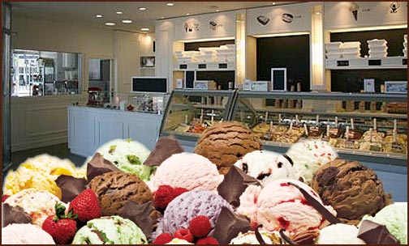
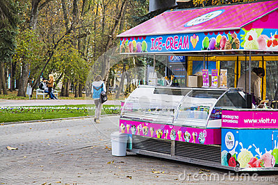

ACERCA DE Carritodeloshelados.enlaces
En Tienda de Helados crecemos y nos desarrollamos ofreciendo con calidad y calidez las mejores cremas artesanales. Procuramos la excelencia en nuestros productos y servicios buscando con responsabilidad la satisfacción de nuestros clientes y colaboradores.
Tienda de Helados forma parte de un selecto grupo de heladerías boutique y es reconocida por la excelencia en su proceso de elaboración.
Nuestra pasión por el helado nos permite crear e innovar un sinfín de sensaciones a través de nuestra amplia y variada combinación de sabores.
|  |  |